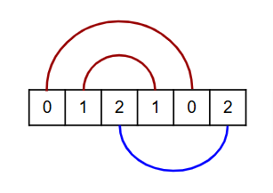

Given an array of $2n$ elements where every value has exactly two occurrences, we say that it is bipartite-connectable if we can write the array on paper in a row and connect each pair of values either above or below without intersections.
For example, the array $[0,1,2,1,0,2]$ is bipartite-connectable:

Note that each connection must be strictly above or strictly below the array.
Attached is an array given as a comma-separated list. The array has $160\,000$ elements consisting of $n=80\,000$ values, each one having two occurences.
The given array is bipartite-connectable. What is the maximal number of above connections that can be made while bipartite connecting this array?